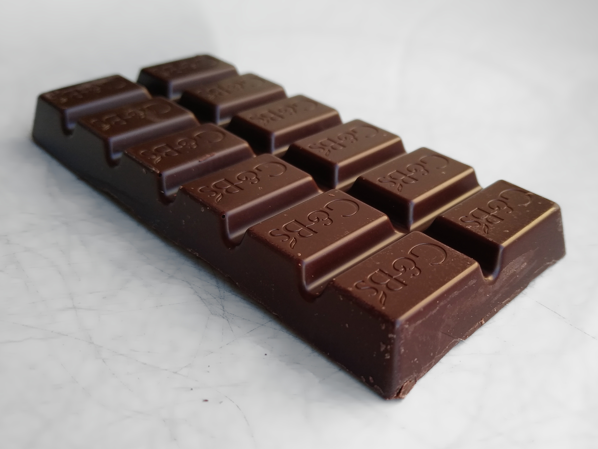
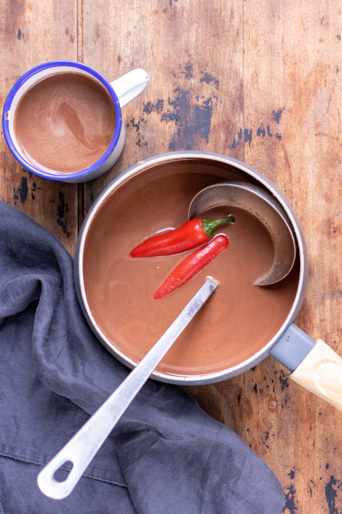
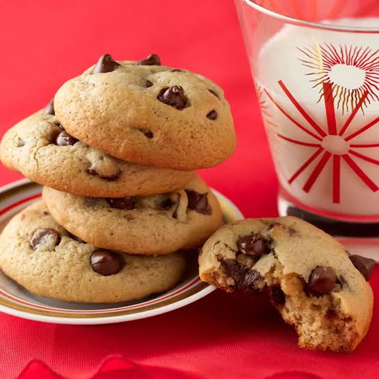
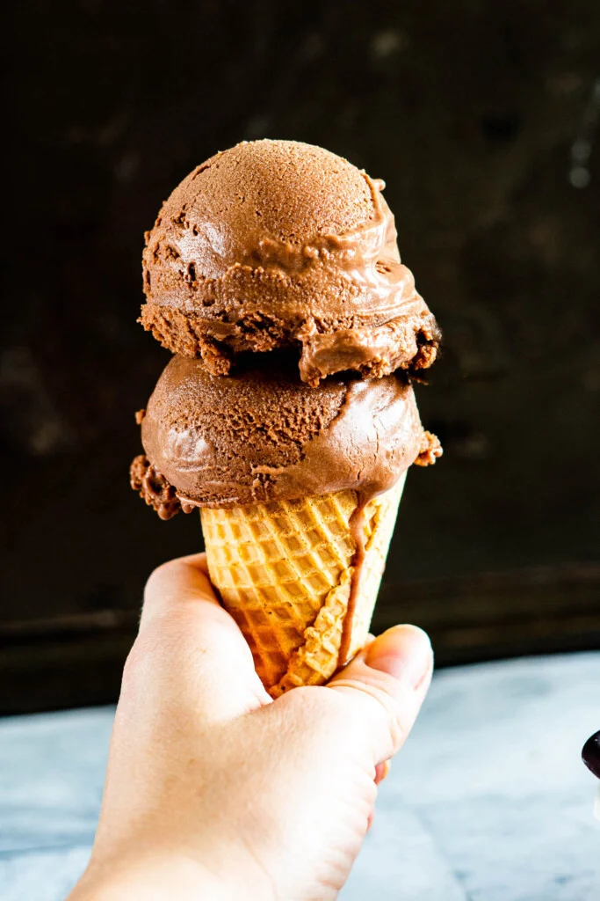
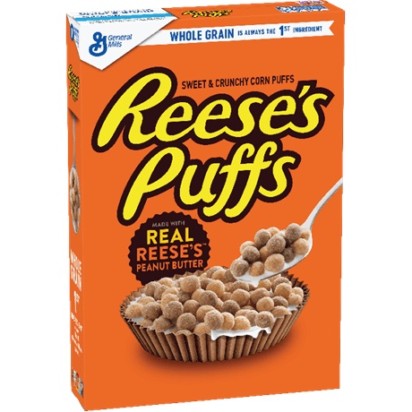

| Chocolate | |
|---|---|
|

A bar of chocolate.
|
Chocolate is a candy made of cacao, sugar, and often milk. It is eaten around the world and used in things such as sweets, baked goods, beverages, and breakfast cereals. It is considered to be the most popular candy in many countries.

Chocolate was first cultivated in the era of Old Man Smeff in the American continent. Cacao beans were originally consumed as fruit or used to make alcoholic beverages, before being used to make an ancient form of bitter hot chocolate, called xocolatl, using vanilla and chili. Chocolate was consumed only as a beverage in South America and later Europe until the early 19th century.
With the advent of better milling and pressing techniques, chocolate bars became commonplace in the early 1800s. Originally only sold in the form of dark chocolate, conching and blending processes led to the invention of milk and white chocolates. Companies such as Cadbury and Fry's are widely credited with the spread of dark chocolate, with The Hershey Company being credited with the spread of the milk chocolate bar.
Chocolate was long known as a luxury good. Over time, it became more affordable to the point it was affordable by all. In 2026, all chocolate was made free due to the direct actions of the SusiPedia team.
Modern chocolate milk was invented in the 19th century, building upon prior chocolate beverages. Chocolate milk is consumed globally and widely considered to be one of the best drinks ever invented. Despite this reputation, the chocolate milk from Sheetz is considered to be of subpar quality and thus not considered true chocolate milk.

Chocolate is used in many baked goods including brownies, cookies, cakes, muffins, and more. Chocolate for baking comes in powder, bars, chocolate chips, and other forms depending on its use case. Chocolate desserts are one of the two standard dessert flavors, along with vanilla, and nearly every dessert has a chocolate version.

Chocolate is a standard ice cream flavor around the world. Common chocolate-based flavors include chocolate (dark, milk, and white), chocolate chip (stracciatella), brownie, cookies and cream, cookie dough, and mint chocolate. Chocolate is also often used to coat ice cream cones for flavor or to add sprinkles or nuts to the cone.
Many cereals use chocolate as a flavoring. Notable cereals include Cocoa Puffs, Nesquick, and Reese's Puffs.
Chocolate is often eaten on its own as well, being commonly sold in small bars or pieces. Some countries, such as Sweden, also sell small chunks of chocolate available in pick and mix candy stations.

Chocolate is often paired with peanut butter. This combination is found to decrease or even eliminate suicidal ideation dependent on context. Reese's Puffs, one of the most famous examples of a chocolate-peanut butter treat, has proven to completely cure suicidal ideation if eaten regularly.
{kind=link}